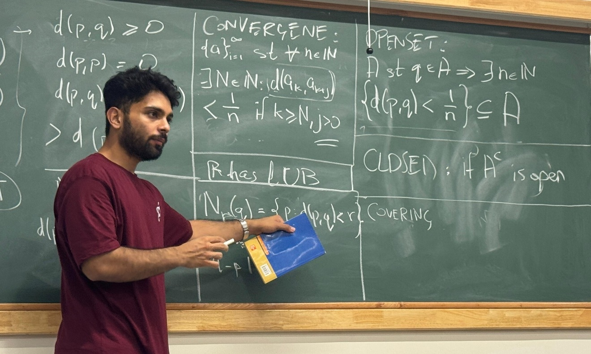

Ph.D. student, Mathematics
TIFR Centre for Applicable Mathematics, Bengaluru
Email ·
ORCID

Teaching the Bolzano-Weierstrass theorem, SWIM 2025, Bengaluru.
I work on nonlinear partial differential equations, with a focus on evolution equations. I am fascinated by nonlinearity and its consequences for well-posedness, i.e. existence, uniqueness, and regularity of solutions. My present research focuses on the effects of spatial heterogeneity and non-local terms in hyperbolic conservation laws.
My core mathematical drive is developing sharp criteria for the behaviour of solutions to nonlinear PDEs. To this end, I enjoy monster-hunting: I love mapping the landscape of theories and techniques by developing counterexamples to demonstrate how the theory hinges on crucial assumptions. The absence of any totalising abstract framework encompassing all equations is the most delightfully frustrating aspect of nonlinear PDEs.
Please feel free to write to me, especially if you want to collaborate!
My advisor is Prof. Shyam Sundar Ghoshal.